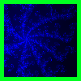
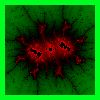
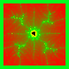
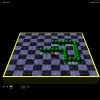
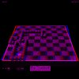
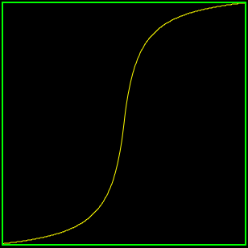
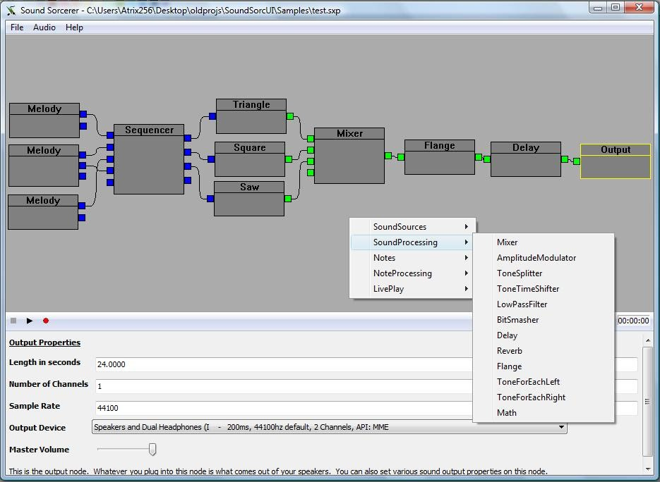

Demofox.org
Blog
My blog, where I post my original research, and any interesting techniques I come across. My aim is to help others learn these interesting and useful things as well by providing them with explanations based on first principles (minimal pre-required knowledge) and working, simple source code. I also find that by writing up and teaching these ideas and techniques, that I learn them more thoroughly in the process.
Mandelbrot Explorer
Explore the mandelbrot set, specify colors, and share your discoveries with your friends. Click on the link above to enter, or click on any of the images below to follow their "Mandelinks". Created with HTML5, uses web workers javascript multithreading.



Realtime Raytracer
I have a real time ray tracing game engine that I've been working on that I've used to release a game on google Native Client with. The engine is all software rendered (CPUs only), it's multithreaded, and takes advantage of some high speed raytracing techniques I came up with to help achieve real time rendering without GPU acceleration. Click the link below to check it out (requires google chrome browser version 16 or higher).
Play MoriRT Snake


Curves, Surfaces, Interpolation, etc.
Integral Versions
2d Quadratic
2d Cubic
2d Trigonometric
1d Quadratic
1d Cubic
1d Trigonometric
Rational Versions
2d Quadratic Rational
2d Cubic Rational
2d Trigonometric Rational
1d Quadratic Rational
1d Cubic Rational
1d Trigonometric Rational
Interpolation
1d Lagrange Interpolation
2d Lagrange Interpolation
1d Cubic Hermite Interpolation
2d Cubic Hermite Interpolation
Surfaces and Volumes
Analytical Surfaces Evaluated by the GPU Texture Sampler (WebGL2)
Analytical Volumes Evaluated by the GPU Texture Sampler (WebGL2)
Curve Fitting
Incremental Curve Fitting
HTML5 Bias and Gain

Sound Sorcerer
A versatile music and sound effect generation / manipulation tool.

Music
Music I've created and/or played - using real instruments, professional software, and software I wrote.
About Me
I'm a graphics programmer at Blizzard, working on Starcraft 2 and Heroes of the Storm.
I'm self taught, starting out as a hobbyist, now with over 15 years of professional experience (starting July 1, 2001). I started making games back in the 486 days, before hardware accelerated graphics, using mode 13h and others for 2d and 3d graphics in 16 and 32 bit mode. I've worked at large and small companies, shipping a variety of games on a variety of consoles and PC hardware.
I'm a deep generalist, with specialties including:
- Real Time Rendering
- Unorthodox Graphics - ray marching, path tracing, signed distance fields, real time ray tracing and more
- Audio Programming
- Skeletal Animation Programming
- Engine Generalist
- Gameplay Generalist
- Original Research
- Online Engineering (web services, databases, etc)
- Leadership when required
My other interests include hiking, making music, and martial arts (:
Here is an outdated Resume that really needs to be updated!